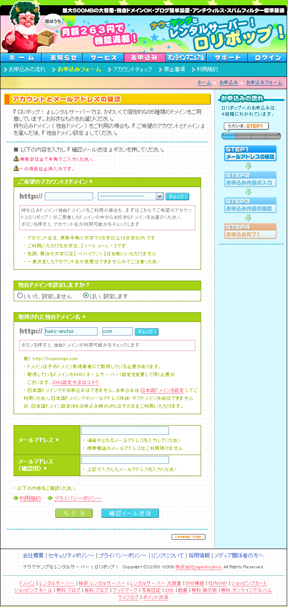

STEP 1
1.ロリポップにアクセスします。
2.右側にある「お申し込みフォームへ」か中央下の「ロリポップ!のお申し込みはこちらより!」ボタンを押します。
STEP 2
1.「ご希望のアカウントとドメイン *」を適当に決めて、「独自ドメインを設定しますか？」に「はい、設定します」を選択します

STEP 3
1.「取得された独自ドメイン名」に「hairs-anchor」「com」を入力し「チェック」ボタンを押します。
2.「メールアドレス」を入力して、「確認メール送信」ボタンを押してください。
申し込みが完了したら、登録時の登録メールを転送してください。
土田さんからもらってる画像をホームページにアップします！！
以上！お疲れ様でした！